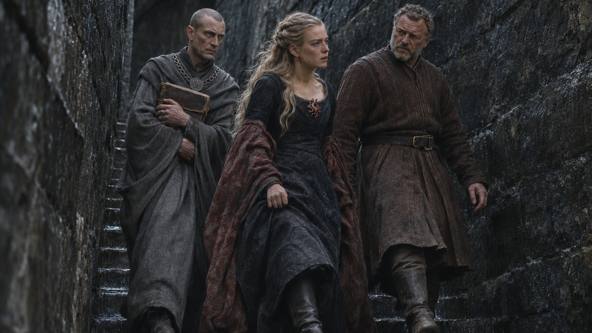

N60-Q09-C01
generated
Prompt
Plan de trois-quarts en descente. Rhaenyra descend une marche entre Gerardys, registre serré contre lui à sa gauche, et Quince à sa droite. Les trois corps sont cadrés entre les murs étroits de la cage d’escalier. Peyredragon, cage d’escalier de pierre. Jour humide doux, pierre mouillée et lumière de cour remontant dans la cage. rhaenyra : 30–35 ans, visage ovale, pommettes nettes, peau claire, fatigue contenue, cheveux blond cendré long en torsades demi-relevées, silhouette stature moyenne, maintien droit mais fatigué. robert-quince : 50–60 ans, visage large, carré, ridé, barbe courte grise, cheveux courts gris-brun, silhouette large, robuste. gerardys : 53 ans, visage long, maigre, yeux creusés, cheveux gris presque rasés, silhouette mince, légèrement voûté. Tenues visibles : rhaenyra — Robe bleu-noir à manches bordeaux, même coiffure demi-relevée ; sans couronne ni cape de mer. ; robert-quince — tunique longue brune, ceinture cuir, bottes ; gerardys — robe grise anthracite usée. Photogramme réaliste cinématographique 16:9, lumière motivée, peau et matières physiques, couleur contenue, sans inscription générée.